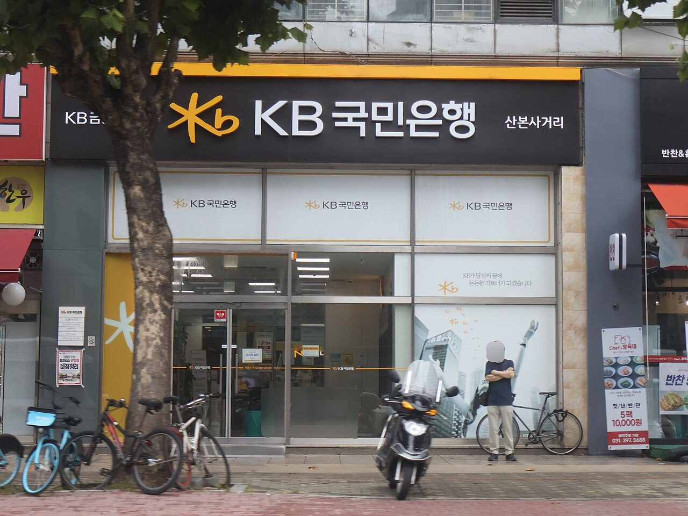
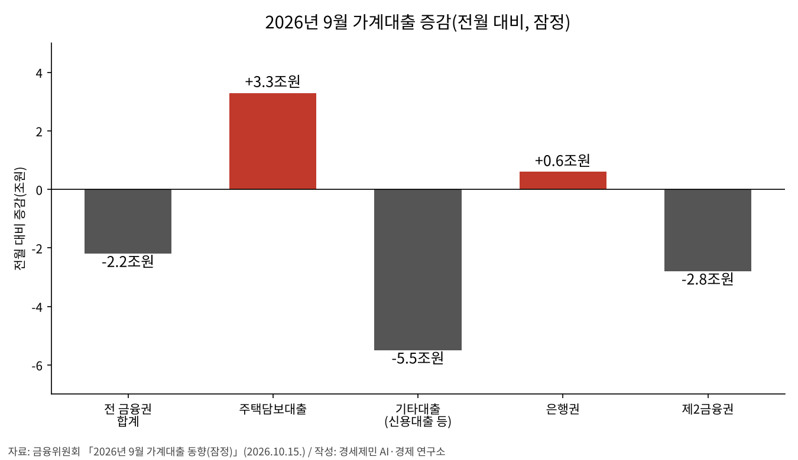
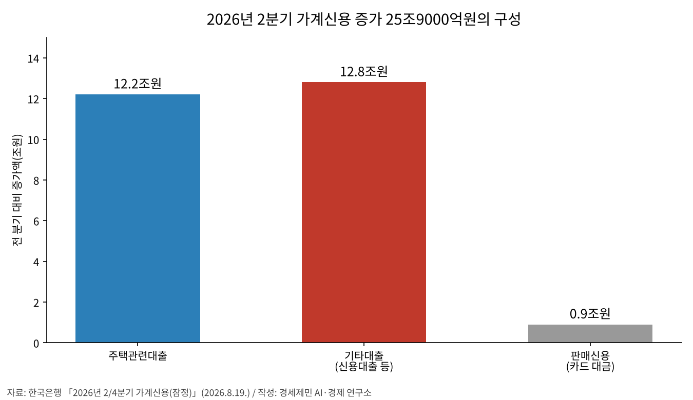

[가계부채 브리핑] 가계대출 9개월 만에 2조2000억원 감소, 주택담보대출은 3조3000억원 늘어
신용대출 3조원 줄고 분기 말 부실채권 상각·명절 상여금 겹쳐
6월 말 가계신용 2019조8000억원, 석 달 새 25조9000억원 늘어 2021년 3분기 이후 최대
4월 「부동산과 금융의 절연」 선언, 8월 총량 목표 1.5%에서 3.0%로 두 배
AI경세제민=김갑봉 기자 | 9월 전 금융권 가계대출이 2조2000억원 줄었다. 금융위원회 잠정 집계로 지난해 12월 이후 아홉 달 만의 감소다. 줄어든 것은 신용대출을 비롯한 기타대출로 5조5000억원이다. 주택담보대출은 같은 달 3조3000억원 늘었다.
빚이 줄었다는 숫자 안에서 집을 담보로 한 빚은 계속 불었다. 금융위원회는 주택 거래 감소와 분기 말 부실채권 정리, 명절 상여금을, 한국은행은 개인 주식투자 감소를 함께 원인으로 들었다. 금융위원회와 한국은행 통계를 맞대 무엇이 줄고 무엇이 남았는지 짚는다.

줄어든 것은 신용대출 같은 기타대출이다
금융위원회가 10월 15일 낸 9월 가계대출 동향을 보면 전 금융권 가계대출은 2조2000억원 줄었다. 순감은 지난해 12월 1조2000억원 감소 이후 처음이다. 월 증가액은 5월 9조3000억원에서 8월 2조8000억원으로 줄어 왔다.
감소는 기타대출에서 나왔다. 기타대출은 5조5000억원 줄어 8월 1조5000억원 감소보다 폭이 커졌다. 그 가운데 신용대출이 3조원 줄었다. 8월 신용대출 감소는 4000억원이었다. 한 달 새 감소 폭이 7.5배가 됐다.
업권별로는 은행권이 6000억원 늘었다. 8월 3조5000억원 증가에서 크게 줄었다. 제2금융권은 2조8000억원 줄었다. 여신전문금융회사가 9000억원, 보험사가 8000억원, 상호금융이 7000억원 줄었고, 저축은행은 4000억원 감소로 돌아섰다.

금융위원회는 감소 원인으로 세 가지를 들었다. 주택 거래량과 입주 물량 감소, 분기 말 부실채권 매각과 상각, 명절 상여금 같은 계절 요인이다. 한국은행은 은행 기타대출 감소를 개인 주식투자 감소에 분기 말 부실채권 정리와 명절 상여금 같은 계절 요인이 겹친 결과로 봤다.
상각은 돌려받기 어려운 채권을 손실로 처리해 장부에서 지우는 일이고, 매각은 그 채권을 다른 회사에 넘기는 일이다. 빚진 사람이 원금을 갚은 것과는 다르다. 9월 감소에는 갚은 빚과 장부에서 덜어 낸 빚, 계절 요인으로 잠시 줄어든 빚이 섞여 있다.
주택담보대출은 계속 늘었다
같은 달 주택담보대출은 전 금융권에서 3조3000억원 늘었다. 8월 4조3000억원보다 증가 폭은 1조원 줄었다. 은행 주택담보대출은 2조9000억원 늘어 8월 4조1000억원 증가에서 줄었다. 증가 속도는 느려졌지만 방향은 바뀌지 않았다.
은행 몫 2조9000억원 가운데 디딤돌·버팀목 같은 정책대출이 1조1000억원으로 8월과 같았다. 은행 자체 주택담보대출은 2조9000억원에서 1조8000억원으로 줄었다. 9월 은행 주택담보대출 증가의 38%를 정책대출이 채웠다.
한국은행은 은행 주택담보대출 증가 폭이 준 까닭을 전세 거래 둔화와 입주 물량 감소로 설명했다. 신진창 금융위원회 사무처장은 하반기 위험 요인으로 주택가격 상승 기대와 신용대출 변동성 확대를 꼽았다. 그러면서 금융권에 긴장의 끈을 늦추지 말고 가계부채 관리에 만전을 기해 달라고 당부했다.
신진창 사무처장은 연말 대출 절벽 우려는 제한적이라고 봤다. 관리 목표를 높이고 집단대출을 따로 관리해서다. 다만 5대 시중은행은 8월에 늘어난 대출 여력을 한 달 만에 다 썼다. 9월 17일 기준 다섯 곳 가운데 두 곳은 연간 목표를 크게 넘었다.
한 사람이 진 빚도 커졌다. 한국은행 차주별 통계를 보면 2분기 말 차주 한 사람의 주택담보대출 잔액은 1억6193만원이다. 석 달 새 187만원 늘었다. 같은 때 차주당 가계대출 잔액은 9790만원으로 50만원 늘었다.
새로 빌리는 액수는 줄었다. 2분기에 새로 받은 주택담보대출은 차주당 2억829만원으로 1분기보다 2110만원 적었다. 새 대출은 작아졌고, 이미 진 빚은 계속 불었다.
가계 빚은 2000조원을 넘었다
한국은행이 8월 19일 낸 2분기 가계신용 통계에서 6월 말 잔액은 2019조8000억원이다. 처음으로 2000조원을 넘었다. 석 달 새 25조9000억원 늘어 2021년 3분기 34조8000억원 이후 가장 많이 늘었다. 가계대출만 1891조3000억원이다.
신용대출과 증권사 신용공여 같은 기타대출이 12조8000억원 늘었다. 주택관련대출은 12조2000억원 늘었다. 기타대출 증가가 주택관련대출을 웃돈 것은 2021년 2분기 이후 처음이다. 김성준 한국은행 금융통계팀장은 기타대출이 크게 는 까닭을 주식투자 자금 수요로 설명했다.

한국은행은 6월 금융안정보고서에서 수도권 주택가격 상승세가 다시 커지고 차입 투자가 늘어 금융불균형이 쌓일 수 있다고 짚었다. 금리 상승에 따른 취약부문 부실 확대와 비은행 금융기관의 유동성·자산건전성 부담도 위험으로 꼽았다.
같은 날 금융통화위원회도 수도권 주택가격 상승과 자산투자 증가, 취약부문 부실 확대 우려에 주의가 필요하다고 적었다. 경제가 성장하는데도 가계부채와 취약부문 위험이 부각됐다는 위원 의견도 실렸다.
9월 22일 낸 금융안정 상황 점검은 다른 면도 함께 적었다. 가계신용 증가세는 커졌지만 소득이 나아져 부채 부담은 덜해졌다고 평가했다. 동시에 수도권 중·저가 주택가격의 높은 상승과 비은행 연체율 상승을 들어 취약성 누적 우려가 일부 커졌다고 봤다.
금리는 올리고 총량은 넓혔다
금융위원회는 4월 1일 올해 가계부채 관리방안을 내며 부동산 시장과 금융의 절연을 내걸었다. 올해 가계대출 증가율 목표를 1.5%로 잡았다. 2030년까지 국내총생산 대비 가계부채 비율을 80% 수준으로 낮추겠다는 목표도 함께 내놨다.
한국은행은 7월 16일 기준금리를 0.25%포인트 올려 연 2.75%로 했다. 3년 6개월 만의 인상이다. 통화정책방향은 가계대출 증가와 수도권 주택가격 오름세가 두드러진다고 적었다. 8월 27일 다시 0.25%포인트 올려 연 3.00%로 높였다.
금융위원회는 8월 13일 「부동산 시장 안정을 위한 금융 종합대책」에서 가계부채 증가율 목표를 3.0% 수준으로 올렸다. 4월 목표의 두 배다. 하반기 신축 아파트 입주와 재건축·재개발 이주를 앞두고 대출이 끊기지 않게 하려는 조치다.
7월 15일 기준 5대 시중은행 가계대출(정책대출 제외) 증가액은 4조6912억원으로 연간 목표 4조3400억원을 3500억원가량 넘어 있었다. 금융위원회는 늘어난 여력을 재건축·재개발 이주비와 신축 단지 중도금·잔금, 청년·실수요자 대출에 쓰게 했다.
같은 대책은 내년부터 수도권·규제지역 아파트를 세 주고 본인과 배우자가 산 적 없는 1주택자의 전세대출 신규·연장을 원칙적으로 막았다. 실수요 쪽 문은 넓히고 투기 쪽 문은 좁히겠다는 설계다.
정부는 빚이 늘 수 있는 길을 넓혔고, 중앙은행은 빚의 값을 올렸다. 두 기관은 강조점이 다르다. 정부는 입주와 이주 대출이 끊기지 않게 하는 데 무게를 뒀고, 한국은행은 물가와 금융안정에 무게를 뒀다. 9월은 총량 상향과 두 차례 금리 인상이 모두 시행된 뒤 처음 맞은 한 달이다.
위험은 남은 빚과 일시 요인에 있다
첫째는 감소의 성격이다. 당국이 꼽은 원인 가운데 부실채권 정리와 상여금은 분기 말과 명절이라는 날짜에 매인 요인이다. 상각과 매각은 빚진 사람의 상환 의무를 없애지 않는다. 10월과 11월 숫자가 같은 방향으로 이어지는지 봐야 9월이 흐름인지 일시적인지 가릴 수 있다.
둘째는 남은 빚의 이자다. 주택담보대출은 9월에도 늘었고 기준금리는 7월과 8월 두 차례에 걸쳐 0.50%포인트 올랐다. 금리 인상은 시차를 두고 가계 이자 부담에 닿는다. 한국은행 금융통화위원회 의사록은 일부 취약차주의 연체율 상승을 위험으로 짚었다.
셋째는 제2금융권이다. 9월 감소 2조2000억원보다 제2금융권 감소 2조8000억원이 더 크다. 이 감소가 빚을 갚은 결과인지, 부실채권을 털어 낸 결과인지, 대출 문턱이 높아진 결과인지는 지금 통계로 가려지지 않는다. 한국은행은 비은행 연체율 상승을 이미 짚었다.
넷째는 은행 돈의 행방이다. 9월 은행 가계대출이 6000억원 느는 동안 기업대출은 10조7000억원 늘었다. 대기업 대출이 7조5000억원으로 70%를 차지했다.
한국은행은 은행의 대출 영업 강화에 회사채 상환과 운전자금·설비투자 수요가 겹쳐 기업대출이 늘었다고 설명했다. 같은 달 은행 돈은 가계보다 기업, 그 가운데 대기업으로 더 많이 갔다.
물어야 할 것
경세제민 AI·경제 연구소는 세 곳에 묻는다. 금융위원회에는 9월 감소 2조2000억원 가운데 부실채권 상각과 매각이 차지한 몫이 얼마인지 묻는다. 그래야 빚이 줄었는지 장부만 가벼워졌는지 가릴 수 있다. 여력이 한 달 만에 바닥났는데도 대출 절벽 우려가 제한적이라고 본 근거도 묻는다.
한국은행에는 10월 22일 금융통화위원회에서 9월 순감을 어떻게 읽을지 묻는다. 10월 18일 보도된 뉴스1 조사에서 증권사 전문가 10명은 모두 이번 동결을 내다봤고, 대다수가 11월 추가 인상을 점쳤다. 주택담보대출이 계속 느는데 한 달 숫자를 쉬어 갈 근거로 삼을지가 핵심이다.
정부에는 4월의 절연 선언과 8월의 목표 상향이 어떻게 한 줄로 이어지는지 묻는다. 2030년 국내총생산 대비 80% 목표가 그대로인지 묻는다. 늘어난 대출 여력 가운데 실제 입주 실수요에 간 몫을 달마다 공개할 것인지도 묻는다.
확인하지 못한 것
9월 감소분 가운데 부실채권 상각·매각과 명절 상여금이 각각 얼마를 차지했는지는 발표되지 않았다. 금융위원회와 한국은행은 원인을 나열했을 뿐 몫을 나누지 않았다. 그래서 순수한 상환이 얼마인지는 이 글에서 셈하지 못했다.
업권별 세부와 은행 주택담보대출 구성은 금융위원회 보도자료 원문 표로 확인했다. 한국은행 금융시장 동향은 KDI 경제교육·정보센터 요약만 열렸다. 그래서 대기업 대출 7조5000억원과 한국은행의 원인 설명은 원문 표 대신 보도로 확인했다.
한국은행 금융안정보고서와 9월 금융안정 상황 점검은 요약으로 확인했다. 금융취약성지수 같은 세부 수치는 출처가 둘뿐이라 쓰지 않았다. 국내총생산 대비 가계부채 비율의 최신값도 이 글을 쓴 10월 19일 아침까지 공식 발표를 찾지 못했다.
3분기 가계신용과 10월 가계대출 공식 동향은 아직 나오지 않았다. 10월 들어 은행 대출이 다시 늘었다는 보도가 있지만 한 매체 집계라 쓰지 않았다. 10월 22일 금융통화위원회 결정은 이 글 뒤에 나온다.
보도에 걸리는 것
9월 가계대출은 「증가」와 「감소」가 함께 돈다. 한국은행 집계 은행 가계대출은 6000억원 늘었고, 금융위원회 집계 전 금융권 가계대출은 2조2000억원 줄었다. 범위가 다른 통계다. 은행만 보면 늘었고 전 금융권으로 보면 줄었다.
2분기 가계신용 증가 폭은 「4년 6개월 만」 「4년 9개월 만」 「19개 분기 만에」 「5년 만」으로 보도가 갈린다. 한국은행 발표 기준으로는 2021년 3분기 이후 최대다.
1분기 말 잔액도 1993조1000억원과 1993조9000억원이 함께 돈다. 앞은 5월 19일 1분기 잠정 발표 값이고 뒤는 8월 2분기 발표에서 고친 값이다.
2분기 기타대출 12조8000억원과 9월 기타대출 5조5000억원 감소는 바로 빼서 견줄 수 없다. 앞은 증권사 신용공여 등을 넣은 한국은행 가계신용 기준이고, 뒤는 금융위원회 금융권 가계대출 기준이다. 분기와 월이라는 기간도 다르다.
8월 값도 고쳐졌다. 9월 9일 첫 발표에서 8월 전 금융권 가계대출은 2조6000억원 증가, 기타대출은 1조7000억원 감소였다. 10월 15일 발표에서는 각각 2조8000억원 증가, 1조5000억원 감소로 바뀌었다. 이 글은 고친 값을 썼다.
참고문헌
공식 발표자료와 기관 보고서
- 금융위원회 금융정책과, "2026년 9월 가계대출 동향(잠정) 및 「가계부채 점검회의」 개최", 2026.10.15., https://www.fsc.go.kr/no010101/87939
- 금융위원회 금융정책과, "2026년 8월 가계대출 동향(잠정) 및 「가계부채 점검회의」 개최", 2026.9.9., https://www.fsc.go.kr/no010101/87675
- 금융위원회 금융정책과, "2026년 5월 가계대출 동향(잠정) 및 〈가계부채 점검회의〉 개최", 2026.6.12., KDI 경제교육·정보센터 게재, https://eiec.kdi.re.kr/policy/materialView.do?num=282491
- 한국은행 금융시장국 시장총괄팀, "2026년 9월 금융시장 동향", 2026.10.15., KDI 경제교육·정보센터 게재, https://eiec.kdi.re.kr/policy/materialView.do?num=288135
- 한국은행 금융통계팀, "2026년 2/4분기 가계신용(잠정)", 2026.8.19., KDI 경제교육·정보센터 게재, https://eiec.kdi.re.kr/policy/materialView.do?num=285513
- 한국은행 금융통계팀, "2026년 1/4분기 가계신용(잠정)", 2026.5.19., KDI 경제교육·정보센터 게재, https://eiec.kdi.re.kr/policy/materialView.do?num=281265
- 한국은행 가계부채미시통계팀, "2026년 2/4분기 차주별 가계부채 통계(잠정)", 2026.8.25., KDI 경제교육·정보센터 게재, https://eiec.kdi.re.kr/policy/materialView.do?num=285734
- 한국은행 금융안정국, "금융안정보고서(2026년 6월)", 2026.6.24., KDI 경제교육·정보센터 게재, https://eiec.kdi.re.kr/policy/materialView.do?num=283152
- 한국은행 금융안정국, "금융안정 상황(2026년 9월)", 2026.9.22., KDI 경제교육·정보센터 게재, https://eiec.kdi.re.kr/policy/materialView.do?num=287307
- 한국은행 통화정책국 정책총괄팀, "통화정책방향: 기준금리 2.75%로 상향 조정", 2026.7.16., KDI 경제교육·정보센터 게재, https://eiec.kdi.re.kr/policy/materialView.do?num=284308
- 한국은행 금융통화위원회실, "2026년도 제16차 금융통화위원회(정기) 의사록", 2026.8.27. 회의, KDI 경제교육·정보센터 게재, https://eiec.kdi.re.kr/policy/materialView.do?num=286868
- 한국은행 금융통화위원회실, "2026년도 제12차 금융통화위원회(정기) 의사록", 2026.6.24. 회의, KDI 경제교육·정보센터 게재, https://eiec.kdi.re.kr/policy/materialView.do?num=284113
- 국토교통부·금융위원회·국무조정실·재정경제부, "수도권 23만호+α 추가 공급, 주택 공급 촉진 및 청년 등 실수요자 금융지원 강화", 2026.8.13., KDI 경제교육·정보센터 게재, https://eiec.kdi.re.kr/policy/materialView.do?num=285383
- 금융위원회 금융정책과, "부동산 시장과 금융의 절연을 위한 「'26년도 가계부채 관리방안」 발표", 2026.4.1., https://fsc.go.kr/po010102/86606
언론 보도
- 이광호, "5대 은행 대출, 연간 목표 초과…주택대출 '조이기'", SBS Biz, 2026.7.19., https://biz.sbs.co.kr/amp/article/20000323180
- 서지윤, "늘어난지 한 달 만에… 5대 은행 대출 여력 소진", 파이낸셜뉴스, 2026.9.22., https://www.fnnews.com/news/202609221901057756
- 정상균, "대출 규제 통했나..9월 가계대출 증가폭 3조원대→6000억", 파이낸셜뉴스, 2026.10.15., https://www.fnnews.com/news/202610151124124431
- 임우섭, "[8·13 대책] 실거주 안한 1주택자 전세대출 막힌다…실수요 공급은 대폭 늘려(종합)", 아이뉴스24, 2026.8.13., https://www.inews24.com/view/1994516
- 김혜지, "10명 전원 "이달 동결"…11월부터 두 번 더 올려 3.5% 전망 [금통위 폴]", 뉴스1(파이낸셜뉴스 게재), 2026.10.18., https://www.fnnews.com/news/202610180605279651
사진 출처
- [사진1] LandAndTree, "Kookmin Bank Sanbon Intersection Branch 20240722.jpg", 위키미디어 공용, CC0, https://commons.wikimedia.org/wiki/File:Kookmin_Bank_Sanbon_Intersection_Branch_20240722.jpg
- [도표1] 경세제민 AI·경제 연구소 작성, 자료 금융위원회 「2026년 9월 가계대출 동향(잠정)」(2026.10.15.)
- [도표2] 경세제민 AI·경제 연구소 작성, 자료 한국은행 「2026년 2/4분기 가계신용(잠정)」(2026.8.19.)
※ 이 브리핑은 AI 프로그램 클로드를 활용해 작성했습니다.
관련기사
- [거시경제] 이윤은 18.5% 늘고 임금은 1.9% 늘었다
- 수출 1209억달러 역대 최대, 제조업 고용보험 가입자는 외국인 빼면 4000명 줄어
- 인천 신설구 100일, 법은 「지원하며」라 썼는데 개편 국비 예산은 두 해째 0원
- 인천시와 군·구는 무엇을 연구에 맡기나, 정책연구 727건을 다 세어 봤다
저작권자 © AI경세제민 무단전재 및 재배포, AI학습 및 활용 금지